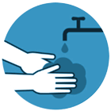

FAQ
COVID-19
Manejo da infecção causada pelo novo coronavírus
FAQ - Perguntas e Respostas
Este material será utilizado como um Guia rápido com Perguntas e Respostas sobre o Coronavírus SARS-CoV-2 e a doença COVID-19 para apoio aos alunos do curso e demais interessados no tema.
-
1) O que é covid-19?
É o nome dado à doença causada pelo coronavírus. Esse nome vem de "COrona", "VIrus" e "Disease” (doença), e 2019 representa o ano em que ela surgiu (o surto foi relatado à Organização Mundial da Saúde em 31 de dezembro).
-
2) O que significa a palavra coronavírus?
A palavra coronavírus refere-se ao grupo ao qual o vírus pertence.
Os coronavírus são a segunda principal causa de resfriado comum.
-
3) O que significa Sars-CoV-2?
É o nome do vírus, uma sigla para Severe Acute Respiratory Syndrome CoronaVirus 2 (síndrome respiratório aguda grave por coronavírus 2, em inglês).
-
4) Quando devo usar SARS-CoV-2, COVID-19 e coronavírus?
- SARS-CoV-2, coronavírus, novo coronavírus: Use quando se referir ao vírus.
Exemplo: “Mais de 290 estão infectadas pelo coronavírus no Brasil” - COVID-19: Use quando se referir à doença. A referência é no feminino - a (doença) COVID-19.
Exemplo: A (doença) COVID-19 já matou mais de 2.500 pessoas na Itália.
- SARS-CoV-2, coronavírus, novo coronavírus: Use quando se referir ao vírus.
-
5) Como surgiu o novo Coronavírus?
O novo coronavírus foi identificado pela primeira vez em Wuhan, na província de Hubei, China, em pessoas expostas em um mercado de frutos do mar e de animais vivos.
-
6) O novo coronavírus é o mesmo que os vírus Sars ou Mers?
Não. Os coronavírus pertencem a uma grande família de vírus, que podem circular tanto entre pessoas, como entre animais, incluindo camelos, gatos e morcegos. O recém-identificado coronavírus não é o mesmo que o coronavírus que provoca a Síndrome Respiratória do Oriente Médio (Mers) ou a Síndrome Respiratória Aguda Grave (Sars).
-
7) Qual é a diferença entre transmissão local e comunitária (sustentada)?
- Transmissão local: São casos de pessoas que se infectaram e não estiveram em nenhum país com registro da doença, mas tiveram contato com outro paciente infectado, que trouxe o vírus de fora do país.
- Transmissão comunitária ou sustentada: São casos nos quais não é possível identificar as fontes de transmissão da doença. Esse tipo de transmissão sugere circulação ativa do vírus na comunidade.
-
8) Quais os primeiros sintomas da COVID-19?
Os sintomas da COVID-19 são bastante parecidos com os da gripe: febre, tosse e dificuldade para respirar.
-
9) Como diferenciar gripe comum do coronavírus?
Como os sintomas da COVID-19 são bastante parecidos com os da gripe, a única forma de saber se a infecção é causada pelo coronavírus é por exame laboratorial. Veja abaixo o quadro comparativo dos sintomas:

Quadro comparativo - Coronavírus, Resfriado e Gripe no site da UNA-SUS.
Fonte: UNA-SUS.
-
10) Quais são os critérios para aplicação do teste? Pessoas com sintomas leves não estão sendo testadas?
Pessoas com dificuldade respiratória tem prioridade porque não há kits suficientes para todos que procuram os serviços de saúde. A pessoa que não tiver sintoma grave deve ficar em casa e circular o menos possível.
-
11) Como posso fazer o teste de diagnóstico na Fiocruz?
O laboratório de referência da Fiocruz realiza testes em materiais que são coletados nas unidades de saúde e enviados para a Fundação Oswaldo Cruz, pelos laboratórios centrais de saúde pública. A Fiocruz não realiza a coleta diretamente com os cidadãos.
-
12) A COVID-19 pode apresentar outros sintomas?
Os sinais e sintomas do novo coronavírus (SARS-CoV-2) são principalmente respiratórios. Ela pode causar infecção do trato respiratório inferior, como as pneumonias.
-
13) Pessoas com sintomas leves podem transmitir a COVID-19?
Sim. Foi relatada infecção assintomática com SARS-CoV-2, mas ainda não se sabe qual o papel da infecção assintomática na transmissão da doença. Da mesma forma, o papel da transmissão pré-sintomática (detecção de infecção durante o período de incubação antes do início da doença) é desconhecido.
-
14) A pessoa pode transmitir o coronavírus mesmo sem apresentar sintoma?
Sim. O período de incubação do vírus pode variar de dois a 14 dias. Durante esse tempo, o vírus tem capacidade de transmissão. Por isso, é importante adotar medidas gerais de prevenção, como lavar as mãos com frequência e não compartilhar objetos de uso pessoal.
-
15) Quando a pessoa deve procurar atendimento de saúde?
A pessoa deve procurar uma unidade de saúde se apresentar sintomas mais intensos, como dificuldade para respirar, febre muito alta (a partir de 39°C) e mal-estar excessivo.
-
16) Devo me preocupar com o coronavírus?
As pessoas devem se preocupar com o impacto do surto de COVID-19. Apesar de a doença ser geralmente leve, especialmente para crianças e adultos jovens, ela pode se agravar, necessitando de cuidados hospitalares. A atenção deve ser direcionada à proteção individual e comunitária, por meio de medidas de higiene e etiqueta respiratória. É importante manter-se informado e seguir as orientações das autoridades locais de saúde, incluindo quaisquer restrições impostas a viagens, movimentação e reuniões.
-
17) A infecção pelo coronavírus pode provocar sintomas graves?
Sim. Sintomas graves como febre alta, dificuldade respiratória e hipóxia podem aparecer rapidamente, principalmente em grupos vulneráveis como: idosos, pessoas com deficiência, pessoas com doenças crônicas ou imunodeprimidas.
-
18) Quais são as pessoas com maior risco para evoluir com formas graves da doença?
Segundo a Organização Mundial da Saúde (OMS), adultos com mais de 60 anos e pessoas com doenças preexistentes têm maiores riscos de ter a doença agravada. Algumas das doenças preexistentes de alerta são: hipertensão arterial, diabetes, doença cardíaca, doença pulmonar, neoplasias, transplantados, uso de imunossupressores.
-
19) Quais são as pessoas que compõem os grupos de risco ou vulnerável?
No caso da COVID-19, são os idosos, pessoas com deficiência e pessoas com doenças associadas, como cardíacos, diabéticos e pessoas com outros problemas respiratórios como a asma e a bronquite. Essas pessoas podem desenvolver o quadro mais grave da doença e, por isso, têm mais chance de morrer devido à infecção e devem ter prioridade no atendimento e na testagem para o vírus.
-
20) As pessoas que se recuperam da COVID-19 podem ser infectadas novamente?
A resposta imune ao COVID-19 ainda não está esclarecida. É pouquíssimo provável que os pacientes com infecção por coronavírus sejam reinfectados logo após a recuperação, apesar de não se saber se uma proteção imunológica semelhante será observada em pacientes com COVID-19.
-
21) Qual é o risco para as mulheres grávidas de contrair a COVID-19?
Atualmente, não se sabe se as mulheres grávidas têm maior chance de adoecer com o COVID-19 do que o público em geral, nem se são mais propensas a terem doenças graves como resultado. As mulheres grávidas sofrem alterações em seus corpos que podem aumentar o risco de algumas infecções. É sempre importante que se protejam de doenças.
-
22) A COVID-19 pode causar problemas durante a gravidez?
Atualmente, não se sabe se o coronavírus causa problemas durante a gravidez ou se afeta a saúde do bebê após o nascimento.
-
23) Uma mulher lactante que tenha sido infectada pelo coronavírus pode continuar amamentando?
A Organização Mundial da Saúde (OMS) orienta a manutenção da amamentação. Até o momento, não há elementos que comprovem que o leite materno possa disseminar o novo coronavírus. A lactante com COVID-19 deve estar atenta à higiene respiratória, lavar as mãos antes e após tocar o seu bebê e limpar e desinfetar as superfícies rotineiramente.
-
24) O que é etiqueta respiratória?
É ter cuidado ao tossir e espirrar. Use um lenço de papel sempre que for tossir ou espirrar e, em seguida, descarte-o. Na ausência do lenço, espirre sobre o antebraço, em vez de usar as mãos para proteger o rosto.
-
25) Quais são os critérios para aplicação do teste? Pessoas com
sintomas leves não estão sendo testadas?
Para reduzir o risco geral de contrair ou transmitir infecções respiratórias agudas, incluindo o coronavírus, algumas das medidas propostas por diferentes autoridades sanitárias são:.
Lavar as mãos frequentemente com água e sabonete por pelo menos 20 segundos, respeitando os cinco momentos de higienização. Se não houver água e sabonete, usar um desinfetante para as mãos à base de álcool 70%.

Evitar tocar nos olhos, nariz e boca com as mãos não lavadas.
Evitar contato próximo com pessoas doentes e manter-se a uma distância de pelo menos um metro das demais pessoas.
Cobrir com o cotovelo ou com um lenço de papel a boca e nariz ao tossir ou espirrar. No caso do papel, jogar no lixo.
Limpar e desinfetar objetos e superfícies tocados com frequência.
-
26) Se estiver doente, o que fazer para não passar a doença?
Você deve ficar em casa se estiver doente. No caso da pandemia atual, a maioria dos países afetados adotaram estratégias de isolamento e/ou quarentena, entre eles o Brasil. As regras para a população, os serviços e o comércio variam em cada cidade ou país e é crucial que todos sigam as recomendações das autoridades locais.
-
27) O que posso fazer para evitar a propagação da COVID-19 no meu local de trabalho?
Lavar as mãos frequentemente com água e sabonete por pelo menos 20 segundos, respeitando os cinco momentos de higienização. Se não houver água e sabonete, usar um desinfetante para as mãos à base de álcool 70%.
Evitar tocar nos olhos, nariz e boca com as mãos não lavadas.
Evitar contato próximo com pessoas doentes e manter-se a uma distância de pelo menos um metro das demais pessoas.
Cobrir com o cotovelo ou com um lenço de papel a boca e nariz ao tossir ou espirrar. No caso do papel, jogar no lixo.
Limpar e desinfetar objetos e superfícies tocados com frequência.
Mantenha os ambientes bem ventilados
-
28) O que fazer em casos de viagens essenciais/inadiáveis?
Apesar de não haver nenhuma restrição para viagens nacionais (domésticas), a orientação é que todos que tenham possibilidade de ficar em casa, que fiquem. Caso não seja possível, higienize suas mãos frequentemente com água e sabão ou álcool 70% ou e evite tocar o rosto. Mantenha-se a pelo menos um metro de distância das demais pessoas. Adote medidas de etiqueta respiratória e não viaje de forma alguma caso faça parte do grupo de risco ou apresente sintomas de tosse e febre.
-
29) Quais são os critérios para aplicação do teste? Pessoas com
sintomas leves não estão sendo testadas?
Pessoas com dificuldade respiratória tem prioridade porque não há kits suficientes para todos que procuram os serviços de saúde. A pessoa que não tiver sintoma grave deve ficar em casa e circular o menos possível.
-
30) O que devo fazer ao retornar de viagem?
Ao retornar de uma área com propagação de COVID-19, deve-se monitorar os sintomas por 14 dias. Em caso de sintomas leves, deve ser feito o isolamento. Em caso de sintomas graves, procurar uma unidade de saúde.
Veja sobre os sintomas nas seguintes perguntas deste FAQ:
8) Quais os primeiros sintomas da COVID-19?
17) A infecção pelo coronavírus pode provocar sintomas graves?
-
31) Como o coronavírus é transmitido?
O coronavírus é transmitido a partir de um indivíduo que tem o vírus, em contato próximo (cerca de 1m) com outras pessoas. Ocorre através do contato físico (aperto de mão, abraço etc), pequenas gotículas de saliva, espirro, tosse e através de objetos ou superfícies contaminadas, como celulares, mesas, maçanetas, brinquedos, teclados de computador etc.
-
32) Qual o tratamento para as pessoas com COVID-19?
Ainda não há um tratamento específico para a doença. As pessoas infectadas devem permanecer em isolamento e receber cuidados de saúde para evitar o agravamento do quadro e aliviar os sintomas, reduzindo o desconforto. Pessoas com sintomas graves devem ser hospitalizadas. Diversos estudos estão em fase inicial para a formulação de protocolos de tratamento. A maioria dos pacientes se recupera graças aos cuidados de suporte.
-
33) O que se pode fazer para controlar os sintomas?
Beber bastante água auxilia no controle da febre. Banhos quentes e umidificadores de ar podem ser utilizados no quarto para ajudar a diminuir a dor de garganta e a tosse. O serviço de saúde deve ser procurado sempre que os sintomas se agravarem.
-
34) A vacina para influenza pode proteger também contra o novo coronavírus?
Não. São vírus diferentes. A vacinação para influenza auxilia no combate da pandemia evitando a coinfecção pelos dois vírus ao mesmo tempo e reduzindo a pressão sobre o sistema de saúde. Por isso, é importante manter o calendário de vacinação atualizado e seguir as recomendações das autoridades sanitárias em relação à vacinação.
-
35) O que é período de incubação?
Período de incubação é o tempo que leva para aparecerem os primeiros sintomas, depois da infecção por coronavírus.
-
36) Qual o período de incubação do coronavírus?
O período de incubação pode variar de um a 14 dias, mais frequentemente ao redor de cinco dias.
Essas estimativas estão sendo atualizados à medida que mais dados se tornam disponíveis.
-
37) Quem deve usar máscaras cirúrgicas?
A OPAS e a OMS recomendam que as máscaras cirúrgicas sejam usadas por:
- pessoas com sintomas respiratórios, como tosse ou dificuldade de respirar, inclusive ao procurar atendimento médico;
- profissionais de saúde e pessoas que prestam atendimento a indivíduos com sintomas respiratórios;
- profissionais de saúde, ao entrar em uma sala com pacientes ou tratar um indivíduo com sintomas respiratórios.
No entanto, o Ministério da Saúde está preparando um novo protocolo com indicação de uso de máscaras também para pessoas que não apresentam sintomas.
-
38) Como usar as máscaras cirúrgicas?
- Antes de tocar na máscara, limpe as mãos com um higienizador à base de álcool ou água e sabão.
- Pegue a máscara e verifique se está rasgada ou com buracos
- Oriente qual lado é o lado superior (onde está a tira de metal).
- Assegure-se que o lado correto da máscara está voltado para fora (o lado colorido).
- Coloque a máscara no seu rosto com cuidado para cobrir a boca e o nariz e amarre com segurança para minimizar as lacunas entre o rosto e a máscara; Aperte a tira de metal ou a borda rígida da máscara para que ela se adapte ao formato do seu nariz.

Etapas para colocãção da máscara no rosto: a) Segurar o respirador com a pinça nasal próxima à ponta dos dedos deixando as alças pendentes; b) Encaixar o respirador sob o queixo; c) Posicionar um tirante na nuca e o outro sobre a cabeça; d) Ajustar a pinça nasal no nariz; e) Verificar a vedação pelo teste de pressão positiva
Fonte: Governo do Ceará.
- Puxe a parte inferior da máscara para que ela cubra sua boca e seu queixo. Enquanto estiver utilizando a máscara, evite tocá-la;
-
39) Quando devo substituir a máscara cirúrgica por outra nova?
Substitua a máscara usada por uma nova máscara limpa e seca assim que estiver úmida ou danificada.
-
40) Como remover a máscara cirúrgica?
Após o uso, retire a máscara removendo as presilhas elásticas ou laços por trás das orelhas, mantendo a máscara afastada do rosto e das roupas. O cuidado é sempre para evitar tocar nas superfícies potencialmente contaminadas da máscara (parte frontal).
-
41) Como descartar a máscara?
- Descarte a máscara em uma lixeira fechada e apropriada imediatamente após o uso.
- Higienize as mãos depois de tocar ou descartar a
-
42) É indicado usar luvas descartáveis em locais públicos para a prevenção do coronavírus?
Não. Lavar as mãos com água e sabão e evitar o contato com o rosto oferece uma proteção mais efetiva do que o uso de luvas ao sair de casa para locais públicos. É possível se contaminar pelo coronavírus mesmo utilizando luvas descartáveis caso você toque em superfícies contaminadas e logo após nos olhos, nariz ou boca.
-
43)Existe uma vacina ou medicamento contra COVID-19?
Até o momento, não há vacina nem medicamento antiviral específico para prevenir ou tratar a COVID-19. Vários países e organizações estão coordenando esforços para desenvolver vacinas e medicamentos para a prevenção e o tratamento.
-
44) Os antibióticos são eficazes na prevenção e/ou tratamento do COVID-19?
Não. Os antibióticos não funcionam contra vírus, eles funcionam apenas em infecções bacterianas. A COVID-19 é causada por um vírus. Portanto, os antibióticos não funcionam. Antibióticos devem ser usados apenas com indicação médica para tratar uma infecção bacteriana.
-
45) Existem medicamentos para a prevenção de COVID-19?
Embora alguns medicamentos possam proporcionar conforto e aliviar os sintomas da COVID-19, não há evidências de que a medicina atual possa prevenir ou curar a doença. Não se recomenda a automedicação com nenhum medicamento, incluindo antibióticos, como forma de prevenção ou cura para a doença.
-
46) Posso utilizar a Cloroquina contra a COVID-19?
Ainda não há evidências de que a cloroquina ou a variante hidroxicloroquina tenha efeito contra a COVID-19, doença provocada pelo novo coronavírus. Não se deve adquirir esses medicamentos, pois são importantes para várias condições reumatológicas e dermatológicas que exigem tratamento contínuo, além de apresentarem potenciais efeitos colaterais.
-
1) Como profissionais de saúde devem se proteger?
Profissionais de saúde devem utilizar medidas de precaução padrão, de contato físico e com gotículas (máscara cirúrgica, luvas, avental não estéril e óculos de proteção), a depender do procedimento a ser realizado.
Para a realização de procedimentos que gerem aerossolização de secreções respiratórias, como intubação, aspiração de vias aéreas ou indução de escarro, deverá ser utilizado precaução por aerossóis, com uso de máscara N95.
A Sociedade Brasileira de Medicina de Família e Comunidade (SBMFC), visando preservar a saúde das médicas e médicos da família e comunidade e profissionais que atuam na APS, reforça as seguintes orientações durante o atendimento e permanência no local de atendimento:
- Para a contenção respiratória utilizar máscara cirúrgica; uso de luvas, gorro e aventais descartáveis; lavar as mãos com frequência; e limpar e desinfetar objetos e superfícies tocados com frequência.
- Para procedimentos produtores de aerossóis usar máscara N95/PFF2;
- Todo profissional que atender os pacientes com suspeita de Síndrome Gripal deve usar EPIs e adotar as medidas para evitar contágio, conforme indicado acima. Atenção para os cuidados que devem ser tomados em relação ao uso de máscara cirúrgica;
- Coloque a máscara com cuidado para cobrir a boca, o nariz e amarre com segurança para minimizar as lacunas entre o rosto e a máscara;
- Enquanto estiver utilizando a máscara, evite tocá-la;
- Remova a máscara usando técnica apropriada (ou seja, não toque na frente, mas remova o laço ou nó da parte posterior);
- Após a remoção, ou sempre que tocar em uma máscara usada, higienize as mãos com água e sabão ou álcool gel, se visivelmente suja;
- Substitua a máscara por uma nova máscara limpa e seca assim que estiver úmida ou danificada;
- Não reutilize máscaras descartáveis;
- Descarte em local apropriado as máscaras após cada uso e troque de máscara após atender novos pacientes.